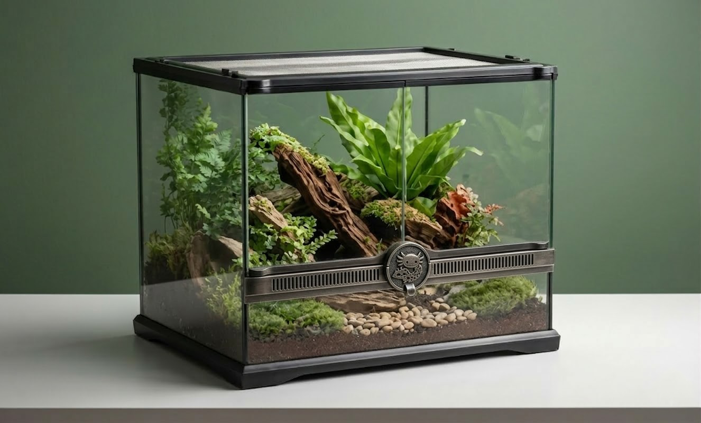
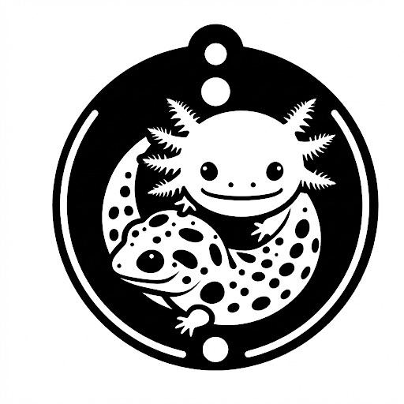
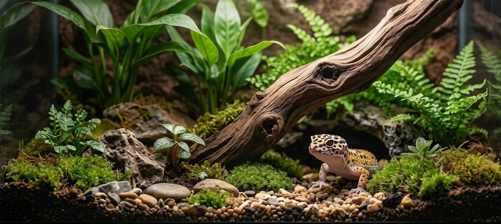
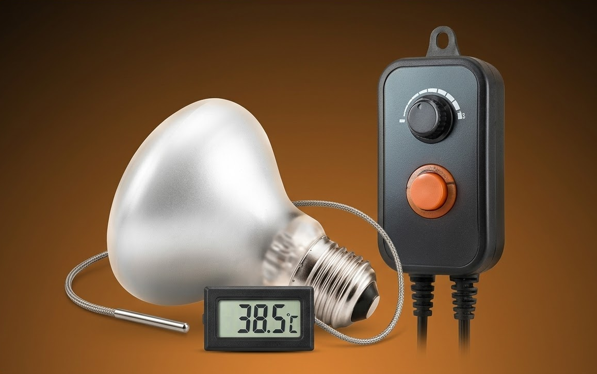
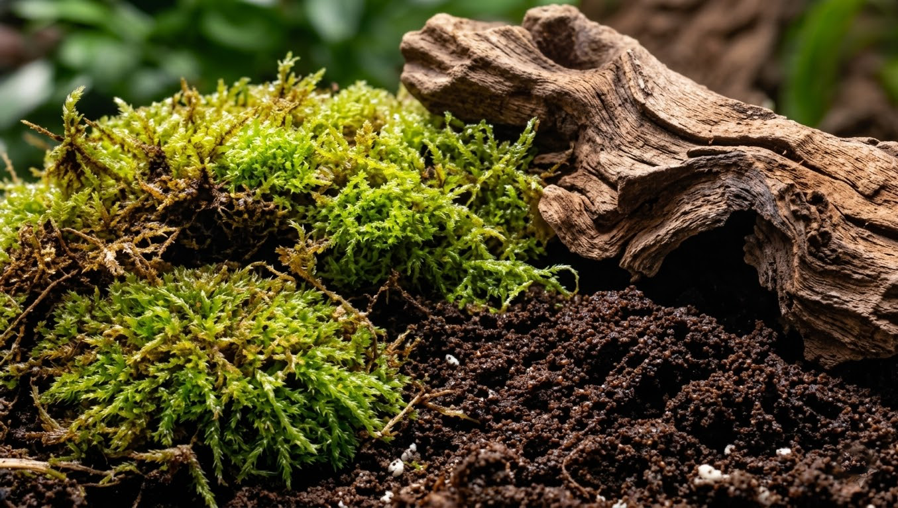

TERRÁRIOS E AQUATERRÁRIOS
Descubra como criar o ambiente ideal, seja para um gecko em ambiente árido ou um axolote em águas cristalinas.



Descubra como criar o ambiente ideal, seja para um gecko em ambiente árido ou um axolote em águas cristalinas.

Informações vitais sobre o controle térmico e a radiação UVB/UVA essenciais para a saúde e o metabolismo do animal.

Aprenda a escolher os elementos naturais corretos para replicar o bioma perfeito e estimular comportamentos naturais.
O nome Aqua e Terra não foi escolhido por acaso. Nossa identidade celebra a diversidade da vida, unindo o mundo aquático do Axolote ao ambiente terrestre do Gecko. Entendemos que cada projeto é único. Seja para planejar um aquário estabilizado ou ajustar meticulosamente as dimensões e os parâmetros de umidade para uma Jiboia-arco-íris da Amazônia, nosso objetivo é compartilhar conhecimento e as melhores práticas para o bem-estar animal.